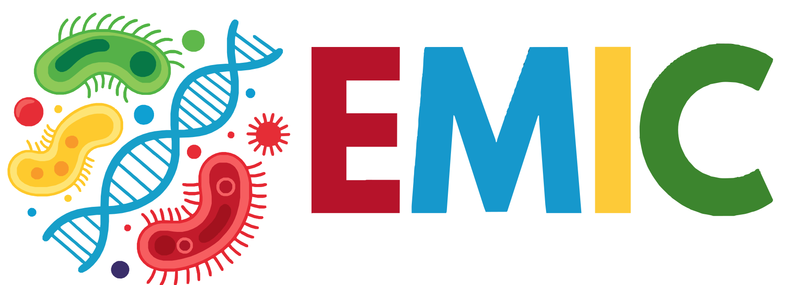

Patrocinadores
Esta página se actualizará próximamente con los patrocinadores confirmados del EMIC.
Únete como patrocinador
Invitamos a empresas, instituciones y aliados estratégicos a apoyar el 2° Encuentro de Microbiología 2026.

Espacio disponible para patrocinador
Espacio disponible para aliado estratégico
Espacio disponible para institución de apoyo